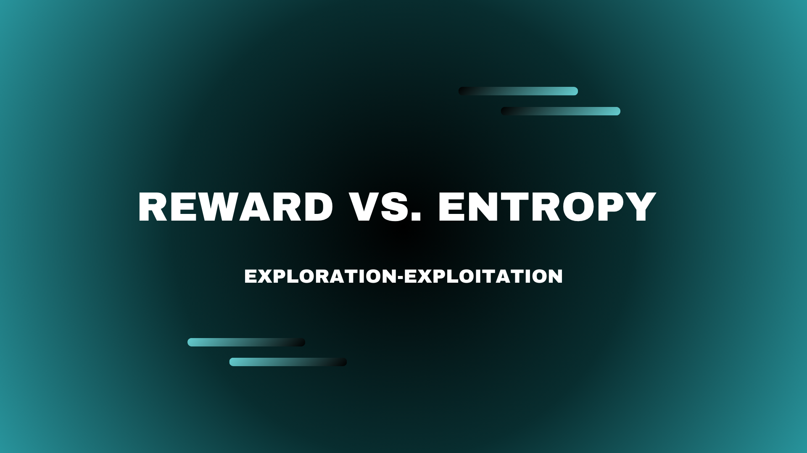
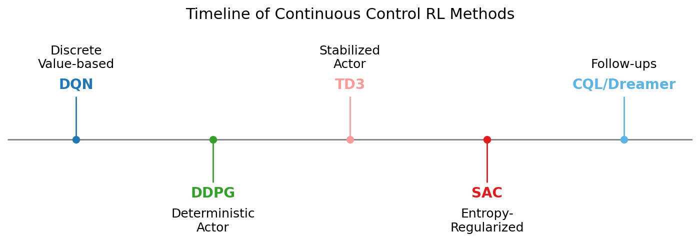
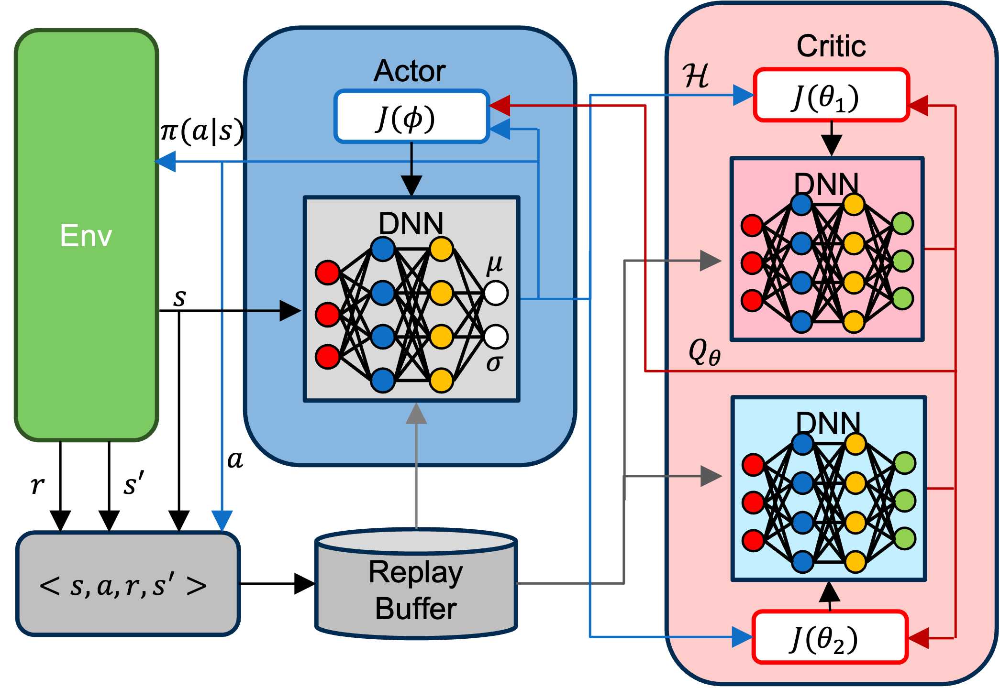
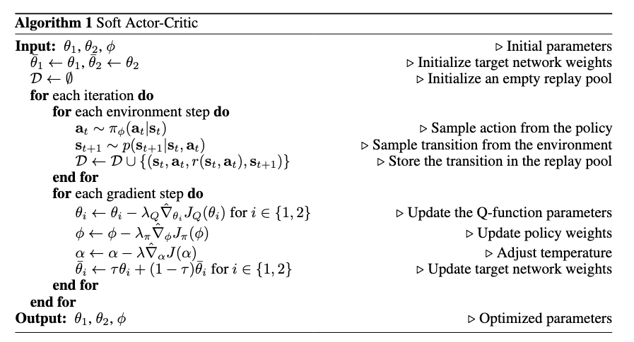
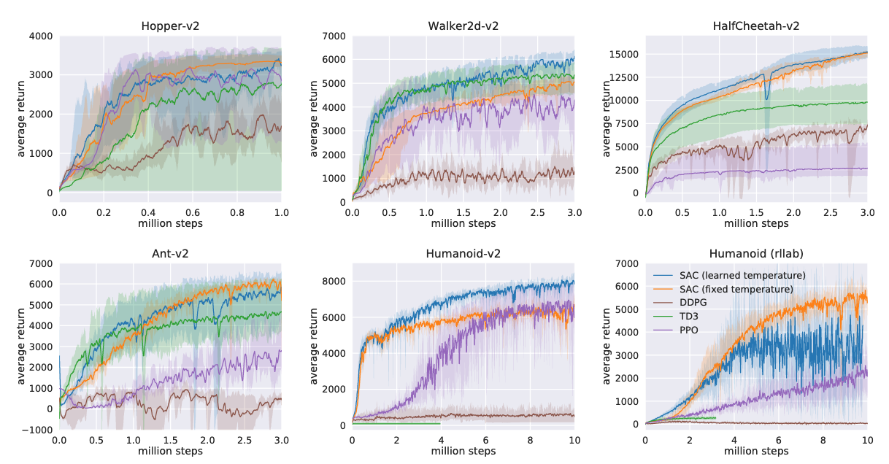
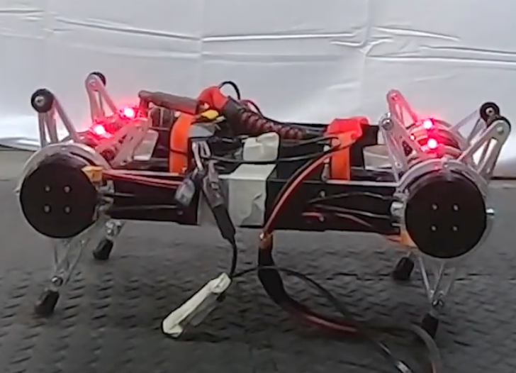
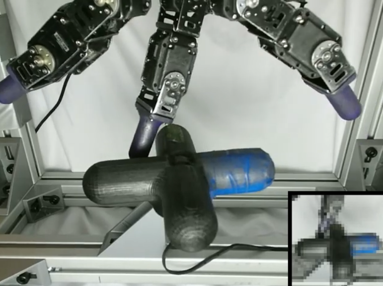

Understanding Soft Actor-Critic: Entropy-Constrained Reinforcement Learning
In this post, I explore the key ideas behind the Soft Actor-Critic algorithm—how it leverages entropy regularization to achieve stable and efficient learning, and why its automatic temperature adjustment represents a breakthrough in continuous control reinforcement learning.

Introduction
The Soft Actor-Critic (SAC) algorithm has become one of the most widely used methods in deep reinforcement learning (RL), especially for continuous control tasks.
At first glance, SAC may look similar to other actor-critic algorithms like DDPG (Lillicrap et al. 2015) or TD3 (Fujimoto, Hoof, and Meger 2018)—but its key innovation lies in how it optimizes both reward and entropy.
This post explores the main ideas behind SAC as presented in Soft Actor-Critic Algorithms and Applications (Haarnoja et al. 2019), which builds upon the earlier work Soft Actor-Critic: Off-Policy Maximum Entropy Deep Reinforcement Learning with a Stochastic Actor (Haarnoja et al. 2018).
I focus on two core features that make SAC both stable and efficient:
- Entropy-regulated learning: SAC doesn’t just balance reward and entropy with a fixed coefficient—it enforces a target entropy constraint.
- Automatic temperature adjustment: The temperature parameter \(\alpha\) is learned rather than manually tuned.
By the end of this post, we’ll see how these design choices make SAC more robust, sample-efficient, and less sensitive to hyperparameters than many of its predecessors.
Background
RL has evolved through a series of key algorithmic advances in both on-policy and off-policy methods. Understanding these developments provides the foundation for why the SAC algorithm was introduced.
On-Policy Methods
Early on-policy algorithms such as TRPO (Schulman et al. 2015), PPO (Schulman et al. 2017), and A3C (Mnih et al. 2016) directly optimize policies using trajectories collected from the most recent policy. While effective, these approaches require fresh samples for every gradient step, which makes them sample-inefficient, particularly in continuous control tasks where data collection is expensive.
Deterministic Off-Policy Methods
DDPG (Lillicrap et al. 2015) improved sample efficiency by introducing deterministic actors and leveraging experience replay. However, DDPG is sensitive to hyperparameters and often unstable in high-dimensional or complex environments.
TD3 (Fujimoto, Hoof, and Meger 2018) addressed several of DDPG’s weaknesses by introducing three key modifications:
- Twin critics to reduce overestimation bias
- Delayed actor updates for smoother training
- Target policy smoothing to improve stability
These changes made TD3 more robust and reliable, yet it still relied on a deterministic actor, limiting its ability to explore effectively in challenging tasks.
Maximum Entropy and Stochastic Exploration
The maximum entropy framework (Ziebart et al. 2008) proposed augmenting the RL objective with an entropy term, encouraging agents to favor stochastic policies that promote exploration and robustness.
Building on this idea, Soft Q-Learning (Haarnoja et al. 2017) applied entropy maximization to continuous control tasks. However, it often struggled with stability because it did not explicitly integrate actor–critic training.
Similarly, algorithms like PPO include an entropy bonus to encourage exploration, but the entropy weight is typically a fixed, manually tuned parameter, which limits adaptability.
Milestones in Continuous Control RL
Here’s a simplified timeline showing key advances leading up to SAC:

DQN | DDPG | TD3 | SAC | CQL/Dreamer
- DQN: First deep RL with value-based learning for discrete actions.
- DDPG: Off-policy deterministic actor–critic for continuous control.
- TD3: Improved DDPG with twin critics and smoothing.
These developments set the stage for SAC, which unifies off-policy learning with stochastic exploration and adaptive entropy.
SAC unifies these ideas around entropy into a single, practical framework by:
- Employing a stochastic actor to enhance exploration
- Introducing a learnable temperature parameter to automatically balance reward and entropy
- Explicitly modifying the value function to incorporate the entropy term
These innovations make SAC both stable and sample-efficient, even in high-dimensional continuous control tasks, addressing limitations of previous methods.
How SAC Works
Entropy-regularized reinforcement learning introduces a stochastic policy that maximizes not only expected reward but also policy entropy:
\[ J(\pi) = \sum_{t=0}^{T}\mathbb{E}_{(s_t,a_t)\sim\rho_\pi} [r(s_t,a_t) + \alpha \mathcal{H}(\pi(\cdot|s_t))] \]
Here:
- \(\mathcal{H}\) measures how random the policy is.
- \(\alpha\) controls the trade-off between reward and entropy.
With this objective, SAC consists of the following key components:
- Actor network: The decision-maker that outputs a distribution over actions, parameterized by its mean and standard deviation. This makes SAC a stochastic actor, unlike deterministic policies such as DDPG or TD3.
- Critic networks: Two critic networks independently estimate the action-value function. The minimum of their Q-values is used to update the policy, reducing overestimation bias (following the Double Q-learning idea (Hasselt 2010)).
- Replay buffer: Enables sample-efficient learning by reusing past transitions rather than collecting fresh samples every update.
- Entropy regularization: Encourages exploration by using the actor’s output to compute policy entropy \(\mathcal{H}\), which directly influences the critic updates.

Automatic Temperature Adjustment
Earlier entropy-regularized RL algorithms, including the original SAC paper (Haarnoja et al. 2018), used a fixed temperature parameter (\(\alpha\)) that had to be manually tuned to balance exploration and exploitation. However, this approach has two major drawbacks:
- The optimal entropy level depends on the task and stage of learning.
- A fixed \(\alpha\) ties exploration strength to reward scaling, making tuning difficult and inconsistent.
SAC resolves this issue by treating \(\alpha\) as a learnable parameter. It reframes the problem as enforcing a target entropy constraint, formulated as a constrained optimization problem:
\[ \max_{\pi_{0:T}} \mathbb{E}_{\rho_\pi} \left[ \sum_{t=0}^{T} r(s_t, a_t) \right] \quad \text{s.t.} \quad \mathbb{E}_{(s_t, a_t) \sim \rho_\pi} \big[ -\log(\pi_t(a_t \mid s_t)) \big] \ge \mathcal{H}, \ \forall t \]
This constrained maximization is converted to a dual problem, where the optimal dual variable \(\alpha_t^*\) satisfies:
\[ \alpha_t^* = \arg\min_{\alpha_t} \mathbb{E}_{a_t \sim \pi_t^*} \left[ -\alpha_t \log \pi_t^*(a_t \mid s_t; \alpha_t) - \alpha_t \bar{\mathcal{H}} \right] \]
In practice, \(\alpha\) is learned by minimizing the following objective:
\[ J(\alpha) = \mathbb{E}_{a_t \sim \pi_t} \left[ -\alpha \log \pi_t(a_t \mid s_t) - \alpha \bar{\mathcal{H}} \right] \]
This adaptive temperature learning, together with policy and soft Q-function updates, forms the core mechanism behind SAC’s stability and efficiency.
Here’s a pseudo code of SAC:

Image credit: Soft Actor-Critic Algorithms and Applications (Haarnoja et al. 2019)
Results
The algorithm was evaluated in both simulation and real-world robotic settings.
MuJoCo Simulation
This environment serves as a standard benchmark for continuous control tasks.
The following algorithms were used for comparison:
- DDPG – One of the early efficient off-policy deep RL methods.
- TD3 – An extension of DDPG that applies the Double Q-learning idea to continuous control.
- PPO – A stable and widely used on-policy policy gradient algorithm.
The authors compared versions of SAC using both a fixed (manually tuned) and an automatically learned temperature parameter, \(\alpha\).
Here are the learning curves across different environments. You can also find the corresponding videos at the end of this article.
 Training curves on benchmark tasks. Image credit: Soft Actor-Critic Algorithms and Applications (Haarnoja et al. 2019).
These results show that SAC consistently performs as well as—or better than—the baselines.
It learns faster in terms of environment interaction steps and exhibits more stable convergence in most cases.
Real-world Robotics
The algorithm was also evaluated on challenging real-world robotic tasks: quadrupedal locomotion and dexterous hand manipulation.
 Locomotion (image credit: Soft Actor-Critic).
 Manipulation (image credit: Soft Actor-Critic)
SAC successfully learned both tasks.
A particularly remarkable finding is that the locomotion policy was trained only on flat terrain, yet it generalized to walking on slopes and steps.
Similarly, the manipulation policy learned faster than PPO and demonstrated strong sample efficiency.
Why It Works So Well?
SAC’s success combines:
- Entropy regularization → better exploration
- Off-policy updates → sample efficiency
- Automatic temperature tuning → stable learning
Impact and Legacy
The paper has been cited 4,018 times (as of October 23, 2025), and the original paper has 12,834 citations according to Google Scholar, underscoring SAC’s profound influence on reinforcement learning research.
SAC represents a turning point in modern RL. By combining off-policy actor–critic methods with entropy-regularized objectives, it set a new standard for stable, efficient, and generalizable learning in continuous control tasks.
Influence on Future Work
SAC inspired a wave of follow-up research:
- CQL (Conservative Q-Learning): Builds on SAC’s stochastic actor–critic structure for offline RL.
- Dreamer: Incorporates model-based planning with entropy-regularized objectives.
- Other entropy-regularized methods: Many modern continuous control algorithms adopt SAC-style stochastic actors and adaptive entropy tuning as standard practice.
By unifying practical learning methods with principled exploration, SAC continues to serve as a benchmark for evaluating new RL algorithms in robotics, control, and reinforcement learning research.
SAC vs. PPO
Here’s my recommendation for when to use SAC versus PPO.
When to use SAC?
- Data is limited.
- Task involves continuous actions.
When to use PPO?
- Task has discrete or low-dimensional actions.
- You prefer an easy-to-implement on-policy method.
If you’re unsure which to choose — try both and compare!
Critiques
Here are my personal reflections on the paper.
- Elegant formulation combining entropy maximization with actor–critic learning.
- Concise and well-structured writing.
- Real-world experiments — most RL papers are limited to simulation, so building physical setups adds great credibility.
- Highly influential and extensible — inspired many later algorithms like CQL and Dreamer.
- Lacks intuitive figures or conceptual illustrations, making the algorithm harder to fully grasp.
- Omits computational cost details for MuJoCo simulations — other methods might be faster in wall-clock training time.
- Little discussion on humanoid task stability — especially regarding the automatically adjusted temperature version.
- Locomotion tasks involve hand-tuned penalties, which may reduce generality.
- Limited experimental diversity — most tests are MuJoCo simulations or a few specific real-world setups; the valve manipulation task seems unusual.
- Few ablations — effects of network architecture, replay buffer size, and entropy targets are not systematically analyzed.
Conclusion
The Soft Actor-Critic algorithm represents a fundamental shift in reinforcement learning design.
By optimizing expected reward under an entropy constraint, SAC offers a principled and practical solution for achieving both stability and efficiency.
Key takeaways:
- SAC maximizes both reward and uncertainty.
- The temperature parameter \(\alpha\) is learned, not manually tuned.
- Entropy constraints make learning more adaptive and stable.
If you’ve ever struggled with brittle RL agents that overfit or fail to explore, SAC’s entropy-constrained framework provides a robust, elegant solution.
Videos
These videos demonstrate SAC’s performance in MuJoCo simulations (from the original paper) and in real-world robotic environments (image/video credit: Soft Actor-Critic).